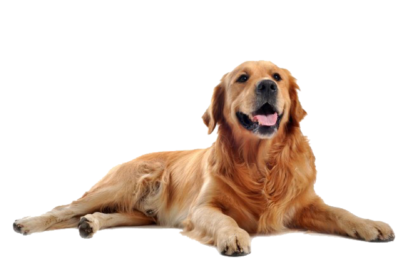

Золотистый ретривер — это нежная собака со спокойным характером. Обычно она хорошо адаптируется к семейной жизни. Собака любит участвовать в разныхактивностях: в помещении или на улице. В первую очередь это охотничья поисковая собака. Она будет пытаться тащить, тянуть или нести всё, что вместится в её рот. Ретриверы очень любят воду. Будьте осторожны, если поблизости есть вода. Золотистые ретриверы — это также и беспокоящиеся собаки. В ходе дрессировки следует соблюдать осторожность, учитывая их нежность и чувствительность.